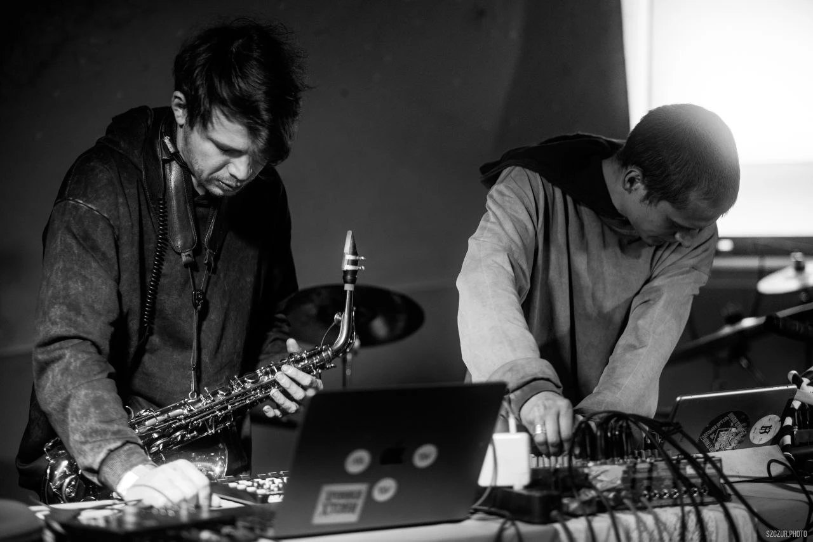

Георгий Орлов-Давыдовский, Аркадий Пикунов — 30 Kapsül
9 октября 2026 года на FANCYMUSIC вышел «30 Kapsül» — альбом шумового художника Георгия Орлова-Давыдовского и саксофониста Аркадия Пикунова. Семь фармацевтических наименований, семь звуковых препаратов: материал вырос из одного импровизационного выступления, записанного вживую, без заранее прописанных структур и тем.
Альбом вырос из импровизационного выступления, собранного из нескольких электронных битов — интимных, умиротворяющих и при этом изначально неизвестных Аркадию. Между участниками существовал лишь устный договор о настрое предстоящего события, без заранее прописанных структур или тем. Тем интереснее, что в итоге материал сложился в цельное произведение с выраженным внутренним сюжетом.
Этот сюжет можно воспринимать абстрактно, как поток состояний, однако при внимательном прослушивании становится ясно, что все части альбома тесно взаимосвязаны. В первую очередь это достигается за счёт остинатного метода, который проходит через всю работу, выступая своего рода каркасом композиции. При этом музыку сложно назвать минималистичной: напротив, она насыщена звуковыми событиями и деталями.
В звуковой палитре сочетаются мелодические линии обработанного саксофона, повторяющиеся ритмические паттерны, вкрапления полевых записей, самодельных инструментов и радио-сэмплов. Особое место занимают фрагменты голосов из американских звуковых нуар-постановок середины XX века, которые добавляют материалу ощущение времени, тревожной кинематографичности и скрытого нарратива.
Всё это формирует эстетику, близкую к дарк-джазу и джазтронике, однако альбом не стремится вписаться в рамки жанровых определений. Скорее, он существует в собственной логике как цельное, медитативное и в то же время напряжённое звуковое пространство, где импровизация, структура и случайность сосуществуют на равных правах.
Фокус-трек — третий, «m. pil.»: одна повторяющаяся ритмическая формула, один непрерывный процесс, пульс плотный и ровный, гипнотический.
вдоль дороги
рифмуя вечности
сигарета свету
где мы и декабрь.
в заброшенном супермаркете фонит женщиной.
не дозвониться.


Об артистах
Георгий Орлов-Давыдовский — шумовой художник, перформер и преподаватель Школы дизайна ВШЭ, руководитель Московской Шумовой Мануфактуры, участник проектов Phurpa, Corps, «Хладна», Purba Tubes.
Аркадий Пикунов — саксофонист, композитор и музыкальный журналист, основатель проекта INDEX III. Выступал с Владимиром Мартыновым, Леонидом Фёдоровым, Алексеем Сысоевым, Николаем Рубановым и другими ведущими фигурами отечественной сцены.
О лейбле
FANCYMUSIC — музыкальный рекорд-лейбл, направленный на издание новой актуальной русской музыки различных направлений. Это свободная платформа для широкого спектра современных российских композиторов и музыкантов, а также основа для появления новых имён.
Ссылки на страницы лейбла
Контакты для прессы
- Emailmail@fancymusic.ru
- Telegram@s_krasin
Пресс-релиз
FANCYMUSIC · Пресс-релиз · 9 октября 2026